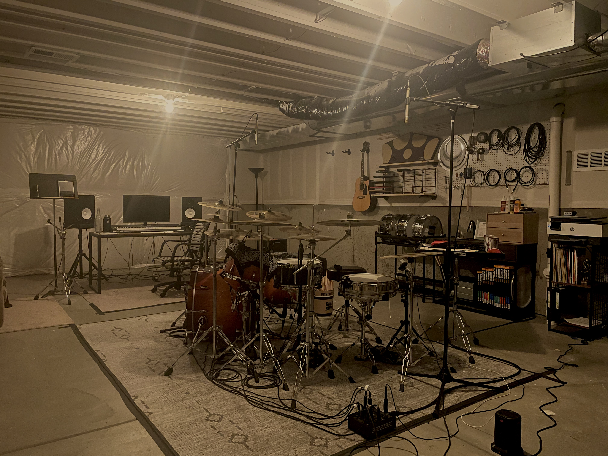

If you are interested in getting live drum tracks, send me an email at benjaminwaterson@icloud.com. I work out of a home studio in Colorado.
I also provide onsite audio recording services.
Recording Credits:
Melissa Schiflet — The Rose Saga
Engineering, editing, mixing, mastering.